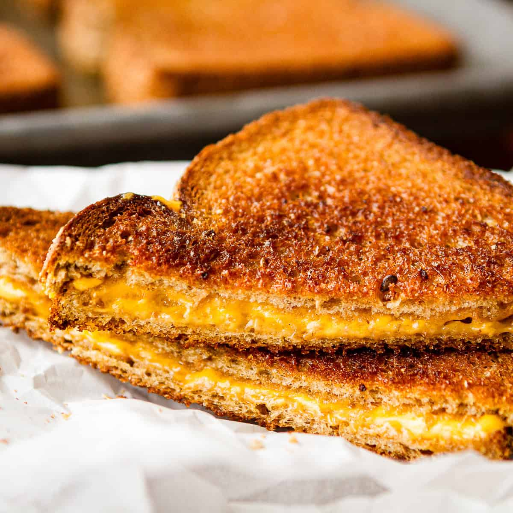

Be ready to dive into this classic sandwhich. This grilled cheese recipe is as simple as it can get while
still
tasting delicious. With only three ingredients, whether you are a beginner or a talented home cook,
this recipe will be
one of the easiest to make. And if you don't like American cheese, then why not
substitue it for your favorite kind.